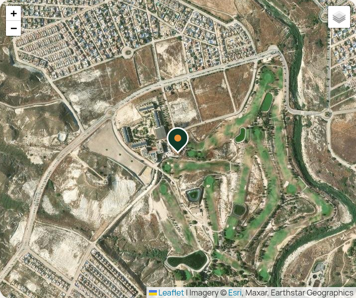

Website review · Casa Club Camposol
Casa Club Camposol website preview
A private preview of the bilingual website for the clubhouse, restaurant, bar and golf course at Camposol, Mazarrón. Nothing is public yet. Please browse every page, on your phone as well as a computer, then send corrections using the checklist at the bottom.
Preview limitations. This preview blocks a few things that work on the real site: the satellite map stays blank (the picture further down shows how it looks), the call and WhatsApp buttons may do nothing here, and the enquiry form is not connected yet. Photos are the venue's own, taken from Facebook, Instagram and camposolgolf.com; higher-resolution originals will make the large photos sharper.
New in this version
- Book a table buttons open a short panel: WhatsApp with a booking message ready to fill in, a phone call, or the enquiry form.
- Today at Casa Club on the home page shows today's line-up, and today is highlighted in the weekly timetable (Spanish time).
- On phones a bar along the bottom gives one-tap Call, WhatsApp and Directions.
- What's On dates (Jersey Boys, Christmas lunch) disappear by themselves the day after they happen.
- Gallery photos can be filtered by terrace & dining, music & events, or golf, and swiped through on a phone.
Pages to review
- HomeInicioToday card, weekly timetable, restaurant, golf, reviews, private hire, map
- Restaurant & BarRestaurante y barThe kitchen, a day at the clubhouse, menu highlights, booking and hours
- GolfGolfCourse, tees and ratings, facilities, green fees, societies
- What's OnAgendaWeekly programme, dates for the diary, private hire, community
- GalleryGalería24 photos with filters and a full-screen viewer
- ContactContactoPhones and email, map, directions, hours, enquiry form
- Legal noticeAviso legalCompany details
- PrivacyPrivacidadGDPR (RGPD) text
The map on the live site

Things only the team can confirm
- Phones & email: Casa Club bookings and WhatsApp +34 602 42 01 67; golf office +34 968 978 886; eventos@casaclubcamposolgolf.com.
- Opening hours: the site says bar and terrace daily from 08:00, kitchen 08:00 to 16:00, open late on event nights. Please give the real bar and kitchen hours, summer and winter.
- Weekly programme: quiz Monday and Thursday 19:30; Funky Orange disco alternate Tuesdays; menú del día at lunchtime on weekdays; Friday fish & chips, bingo 15:30 and live music 16:30 to 18:00; Sunday carvery. Saturday is shown as "tribute nights and karaoke".
- Events: The Jersey Boys tribute on Saturday 31 October 2026; Christmas Day lunch at 65 € per person, three courses with cava.
- Golf: green fees shown "from" 40 € (18 holes), 25 € (9 holes), buggy 20 €; maximum handicap 54; tee lengths and ratings from GolfPass.
- Menu highlights on the restaurant page are typical dishes, not your current menu, and need replacing.
- Company details on the legal pages come from the public registry (Casa Club Camposol Golf S.L., CIF B19345867) and should be checked by your adviser.
- Photos: several show identifiable customers; confirm you are happy to publish them, and send any better originals.
- Reviews quoted on the home page come from Google, Tripadvisor and Golfshake; swap in your own testimonials if you prefer.
The full checklist with sources lives in the project as STAFF-REVIEW.md.
Built with Astro and Tailwind CSS. Font: Plus Jakarta Sans. Map imagery © Esri, Maxar, Earthstar Geographics. Updated October 2026 for internal review.